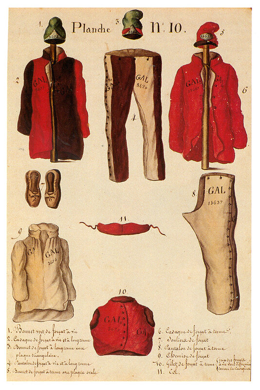

Дезертирство из армии и флота во времена Людовика XIV было тяжким преступлением, за него карали смертной казнью. И Кольбер, и Сеньелэ добивались замены этого наказания пожизненным осуждением на галеры. Система призыва на морскую службу сама по себе порождала дезертиров, но эту систему было трудно заставить работать эффективно. Отказ от регистрации или явки на призывной пункт мог привести к судебному разбирательству или аресту и осуждению (в личном присутствии или заочно) военным судом, который имел полномочия выносить смертный приговор. На практике это наказание повсеместно заменялось пожизненным заключением на галеры. Список лиц, осужденных до 1676 года показывает, что такая замена была общей практикой даже тогда, когда закон не предусматривал пожизненную ссылку на галеры как возможную альтернативу (до сентября 1676 г.)

Одежда осужденных на галеры. Journal historique du bagne par Reynaud, 2 vol., 1825-1826
Еще одним источником для пополнения шиурмы стали нарушители законов, подобных нашим правилам в эпоху «железного занавеса». После безуспешной попытки принудить французских моряков возвращаться во Францию с иностранной морской службы, королевский эдикт запретил французам проживать за рубежом без специального разрешения или проходить службу на иностранных судах, под страхом пожизненной ссылки на галеры (galères perpétuelles).
Некоторые военные преступники, включая армейских дезертиров, активно отправлялись на галеры в шестидесятые годы. В письме интенданта галер Арнуля министру Кольберу от 25 июня 1668 года было сказано: «Si l'on continue d'envoyer les déserteurs des troupes aux galères, cela nous peuplera dans peu.» («Если дезертиров из армии продолжат посылать на галеры, наши потребности будут вскоре удовлетворены.» (Depping, G. B. Correspondance administrative sous le regne de Louis XIV. 4 vols. Paris, 1850-55, II, 927.) Однако смягчение наказания для дезертиров продержалось недолго. Вскоре для них была восстановлена смертная казнь. И только в 1680-х годах, когда министр Сеньелэ оказался в крайнем затруднении с рекрутированием гребцов, наказание для дезертиров вновь было изменено со смертной казни на галеры. Один морской чиновник позже заметил, что Людовик XIV был «тронут заявлениями г. Сеньелэ», что за дезертирство из армии было казнено чрезмерно большое число людей (он сказал «тысячи»). В любом случае, королевский указ от 4 декабря 1684 года смягчил наказание таким образом: «в будущем все дезертиры из войск будут наказаны отрезанием носа и ушей, клеймением в форме цветка лилии на каждой щеке и отправкой на галеры [пожизненно].» (F. A. Isambert et al., eds., Recueil general des anciennes lois francaises, XIX, 465. Цит. по У.Бэмфорду) В следующем году один галерный чиновник объяснил, что он получил шесть дезертиров «которые молоды и будут хорошими гребцами». Но он добавил, что «если практикуемая жестокость, не оставляющая ни единой части носа на лице, будет смягчена, то они будут в будущем лучше пригодны для гребли, поскольку замечено, монсеньер, что даже после небольшой работы затруднение дыхания сильно сокращает их силы, так что их приходится заменять.» (Цит. по У.Бэмфорду).
Этот указ, хотя и не полностью вступивший в действие, помог на многие годы вперед увеличить численность гребцов. Без этого, заметил один комментатор, «было бы невозможно обеспечить экипажами сорок галер». Как бы то ни было, но остается фактом, что дезертиры составляли одну из самых больших групп осужденных на галеры. Однако в 1717 г. галеры потеряли этот источник людской силы, так как была восстановлена смертная казнь за дезертирство. Но галерные чиновники не сразу отказались от этого источника пополнения гребной силы галер.. В 1723 г., после того, как чума в Марселе и Провансе выкосила сотни гребцов, а также в 1740-х гг. в других обстоятельствах они добивались восстановления осуждения на галеры в качестве замены смертной казни. В конце концов, в 1749 г., когда Галерный корпус был формально ликвидирован, наказание за дезертирство было изменено и в некоторых приговорах назначалась отправка на galères des terres, т.е. попросту на каторгу.
Для желающих разобраться в одежде галерников привожу перевод надписей на картинке:
1. Bonnet vert de forçat à vie – Шапка (колпак) зеленая пожизненно осужденных на галеры.
2. Casaque de forçat à vie et à long terme – Плащ осужденных пожизненно и на длительные сроки
3. Bonnet de forçat à long terme avec plaque triangulair – Шапка осужденных на длительные сроки с треугольной кокардой
4. Pantalon de forçat à vie et à long terme – Штаны осужденных пожизненно и на длительный срок
5. Bonnet de forçat à terme avec plaque ovale – Шапка осужденных на (небольшой) срок с овальной кокардой
6. Casaque de forçat à terme – Плащ осужденных на (небольшой) срок
7. Souliers de forçat – Башмаки осужденного на галеры
8. Pantalon de forçat à terme – Штаны осужденных на (небольшой) срок
9. Chemise de forçat – Рубаха осужденного на галеры
10. Gilet de forçat à terme – Жилет осужденных на (небольшой) срок (для осужденных пожизненно отличался по цвету, как как и плащ).
11. Col. – Мы, когда носили подобные штуки под бушлатом или шинелью, называли их сопливчик, или слюнявчик. Воротничок.